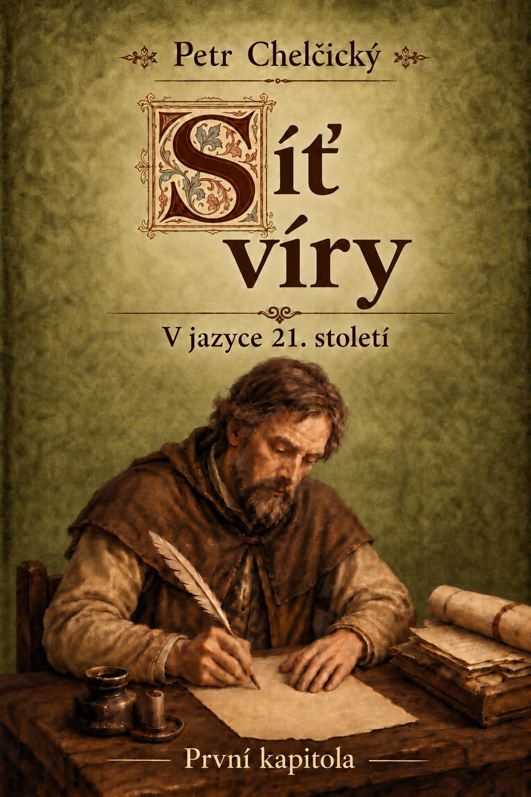

Část 1
Úvod
První kapitola Sítě víry vychází z evangelního vyprávění o zázračném rybolovu. Ježíš vybízí Šimona Petra, aby zajel na hlubinu a spustil sítě.
Otevřít →V jazyce 21. století

První kapitola Sítě víry vychází z evangelního vyprávění o zázračném rybolovu. Ježíš vybízí Šimona Petra, aby zajel na hlubinu a spustil sítě.
Otevřít →Tato digitální edice zpřístupňuje první kapitolu traktátu Petra Chelčického Síť víry v jazyce 21. století, s biblickými odkazy a výkladovými poznámkami.
Otevřít →Když Ježíš domluvil, řekl Šimonu Petrovi: „Zajeď na hlubinu a spusťte sítě k lovu.“
Otevřít →Obraz spáleného domu v první kapitole Sítě víry připomíná, že zasypaný základ nezanikl.
Otevřít →Ediční a autorské údaje, informace o biblických citacích a licenci.
Otevřít →